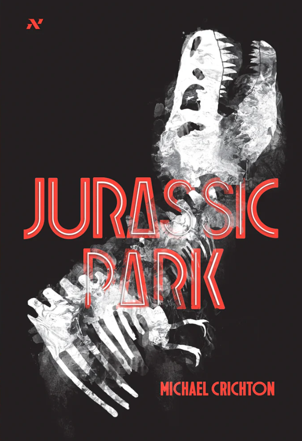
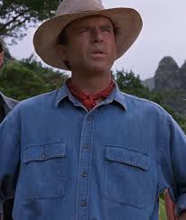

Jurassic Park

Jurassic Park is a 1990 science fiction novel written by Michael Crichton; it is a cautionary tale about genetic engineering that presents the collapse of a zoological park which showcases genetically recreated dinosaurs to illustrate the mathematical concept of chaos theory and its real-world implications.
Michael Crichton
Em Jurassic Park, escrito em 1990 por Michael Crichton, questões de bioética e a teoria do caos funcionam como pano de fundo para uma trama de aventura e luta pela sobrevivência. O livro inspirou o filme homônimo de 1993, dirigido por Steven Spielberg, uma das maiores bilheterias do cinema de todos os tempos.

Elenco
Ellie Sattler
Ian Malcom
Alan Grant

John Hammond